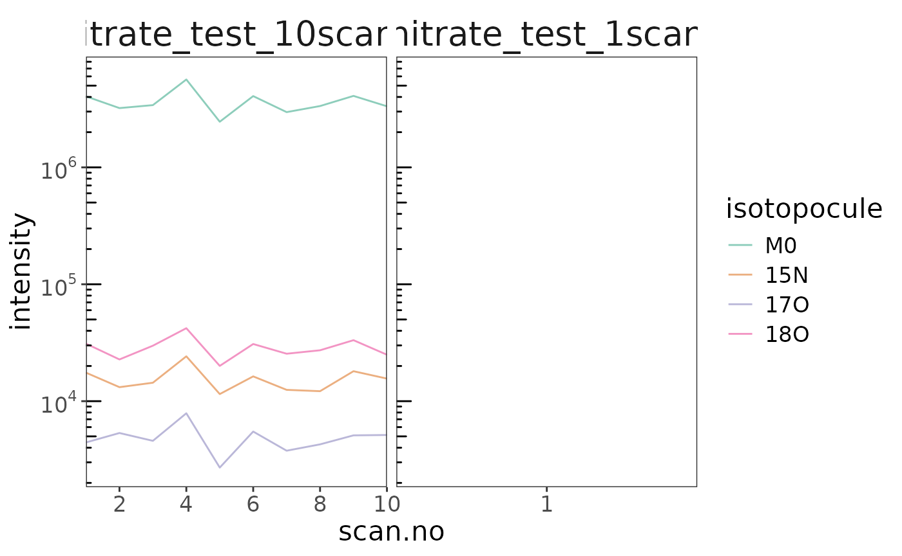
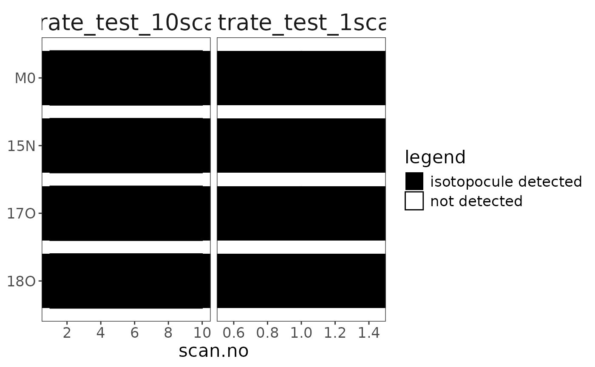

Read raw files
# raw files directory
raw_folder <- system.file(package = "isoorbi", "extdata")
# read files
raw_files <-
raw_folder |>
orbi_find_raw(pattern = "nitrate") |>
orbi_read_raw(include_spectra = c(1, 10, 100)) |>
suppressMessages()
# show summary for the read files
raw_filesCombine (aggregate) data
# aggregate raw data
agg_data <- raw_files |> orbi_aggregate_raw()
agg_dataOptional: use a different aggregator
The minimal aggregator contains a smaller set of columns
to aggregate. The extended aggregator is more elaborate,
providing access to additional columns from the raw data files.
# example: minimal vs. extended aggregator
orbi_get_aggregator("minimal")
orbi_get_aggregator("extended")
# using the extended aggregator instead of the default (standard)
raw_files |> orbi_aggregate_raw(aggregator = "extended")Optional: check for problems
There were no problems reading and/or aggregating the raw data so these are empty.
raw_files |> orbi_get_problems()# A tibble: 0 × 6
# ℹ 6 variables: uidx <int>, file <chr>, type <chr>, call <chr>, message <chr>,
# condition <list>
agg_data |> orbi_get_problems()# A tibble: 0 × 6
# ℹ 6 variables: uidx <int>, file <chr>, type <chr>, call <chr>, message <chr>,
# condition <list>Identify isotopocules
# list of isotopocules (can alternatively be in a tsv/csv/xlsx file)
isotopocules <- tibble(
compound = "nitrate",
isotopolog = c("M0", "15N", "17O", "18O"),
mass = c(61.9878, 62.9850, 62.9922, 63.9922),
tolerance = 1,
charge = 1
)
# identify
data <- agg_data |> orbi_identify_isotopocules(isotopocules)Check satellite peaks
# this can happen here or later on in the workflow
# in the case of these files there are no satellite peaks
data |> orbi_flag_satellite_peaks() |> orbi_plot_satellite_peaks()
Check coverage
# this can happen here or later on in the workflow
data |> orbi_get_isotopocule_coverage()# A tibble: 8 × 10
uidx filename compound isotopocule data_stretch n_points start_scan.no
<int> <fct> <fct> <fct> <int> <int> <int>
1 1 nitrate_test_1… nitrate M0 0 10 1
2 1 nitrate_test_1… nitrate 15N 0 10 1
3 1 nitrate_test_1… nitrate 17O 0 10 1
4 1 nitrate_test_1… nitrate 18O 0 10 1
5 2 nitrate_test_1… nitrate M0 0 1 1
6 2 nitrate_test_1… nitrate 15N 0 1 1
7 2 nitrate_test_1… nitrate 17O 0 1 1
8 2 nitrate_test_1… nitrate 18O 0 1 1
# ℹ 3 more variables: end_scan.no <int>, start_time.min <dbl>,
# end_time.min <dbl>
data |> orbi_plot_isotopocule_coverage()
Retrieve (get) data
agg_data |> orbi_get_data(peaks = everything())# A tibble: 138 × 10
uidx filename scan.no mzMeasured intensity baseline peakNoise peakResolution
<int> <chr> <int> <dbl> <dbl> <dbl> <dbl> <dbl>
1 1 nitrate… 1 62.0 1211. 8.32 513. 70900
2 1 nitrate… 1 62.0 1463. 8.32 513. 94100
3 1 nitrate… 1 62.0 1172. 8.31 513. 80300
4 1 nitrate… 1 62.0 1116. 8.30 513. 87900
5 1 nitrate… 1 62.0 4046979 8.28 513. 114902
6 1 nitrate… 1 62.0 1798. 8.26 513. 86300
7 1 nitrate… 1 62.0 1444. 8.26 513. 93200
8 1 nitrate… 1 62.0 1346. 8.25 513. 84700
9 1 nitrate… 1 62.0 1469. 8.25 513. 92400
10 1 nitrate… 1 62.1 1043. 8.16 513. 89900
# ℹ 128 more rows
# ℹ 2 more variables: isRefPeak <lgl>, isLockPeak <lgl>